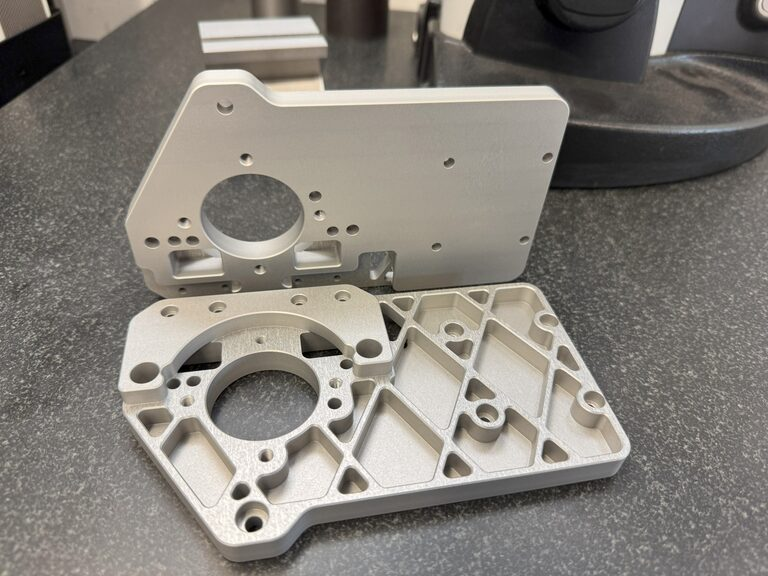

Entwicklung und Produktion
Präzisionsmechanik aus einer Hand
Die deico AG ist ein kleiner aber feiner Dienstleister für Präzisionsmechanik mit Sitz im Zürcher Oberland. Wir drehen, fräsen und konstruieren nach Ihren Vorgaben.

Leistungen
Vom Einzelteil bis zur Serie
Die Einhaltung Ihrer Spezifikationen ist uns oberstes Gebot.

CNC Drehen
Wir produzieren Ihre Drehkomponenten in CNC-Lohnfertigung. Gefertigt wird nach Ihren 3D-Daten oder Zeichnungen. Ersatzteile stellen wir auch nach Muster her.

CNC 5-Achsen Fräsen
Wir produzieren Ihre Fräskomponenten in CNC-Lohnfertigung. Eine unserer besonderen Stärken liegt in der Herstellung von komplexen und anspruchsvollen Bauteilen mit niedriger Stückzahl.

Entwicklung und Konstruktion
Wir konstruieren Präzisionskomponenten und erstellen alle dazugehörigen Fertigungsunterlagen. Auch komplette Baugruppen entwickeln wir, und Maschinenbauteile berechnen und simulieren wir im Haus.


Aus einer Hand
Von der Idee bis zum fertigen Produkt
Maschinentechnik von der Idee bis zum fertigen Produkt: Wir bieten Entwicklung und Produktion aus einer Hand. Profitieren Sie von unserer Fertigungskompetenz bereits in der Entwicklungsphase.
Durch unsere langjährige Erfahrung begleiten wir Sie von der ersten Idee bis zur wirtschaftlichen Produktion. Entwicklung und Produktion vereinigen wir unter einem Dach. Unsere hoch qualifizierten Mitarbeiter sind ein Garant für Qualität.

- CAD
- Autodesk Inventor
- FEM
- Autodesk Inventor Nastran
- CAM
- Autodesk Inventor HSM
Was uns auszeichnet
Fertigungskompetenz im Detail

Schwer zerspanbare Werkstoffe
Wir verarbeiten auch schwer zerspanbare Materialien wie Nickelbasislegierungen (Hastelloy, Inconel) oder Titanlegierungen.

Kostengünstige Serien
Durch unsere automatisierten Fertigungsmaschinen fertigen wir Serien kostengünstig.

Oberflächen messen und protokollieren
Oberflächen von Bauteilen für die Lebensmittel- und Pharmaindustrie sowie die Medizinaltechnik müssen hohen Ansprüchen genügen. Dank moderner Messmittel messen und protokollieren wir sie.

Eigener Lieferservice
Ihre Komponenten liegen uns am Herzen. Deshalb liefern wir persönlich mit unserem eigenen Lieferservice.

Laserbeschriftung
Über unsere Partnerbetriebe realisieren wir verschiedenste Laserbeschriftungen.

Oberflächenbehandlung
Über unsere Partnerbetriebe sind verschiedenste Oberflächenbeschichtungen möglich, bei Aluminium zum Beispiel Eloxieren, Hartanodisieren oder Hartematalieren.


Sonderlösungen
Wenn es nicht ab Katalog geht

Roboterzubehör
Wir entwickeln und produzieren individuelles Roboterzubehör wie Greiferbacken, Adapter für diverse Greifer oder Teileraster für spezielle Werkstücke.

Blechkonstruktionen
Mit unserem CAD erstellen wir Blechkonstruktionen und deren Abwicklungen. Die Bleche lassen wir über unsere Partnerbetriebe fertigen.

Montage
Wir montieren Ihre Vorrichtungen, Baugruppen, Anlagen und Maschinen.


Branchen
In unterschiedlichsten Branchen zu Hause
Wir verarbeiten diverse Materialien wie Stahl, Aluminium, Messing und Kunststoff. Oberflächen- und Wärmebehandlungen sind über unsere Partnerbetriebe möglich.
Angebot anfordern
Senden Sie uns einfach Ihre 3D-Daten oder Zeichnung und wir erstellen Ihnen gerne ein unverbindliches Angebot.
Kontakt aufnehmen